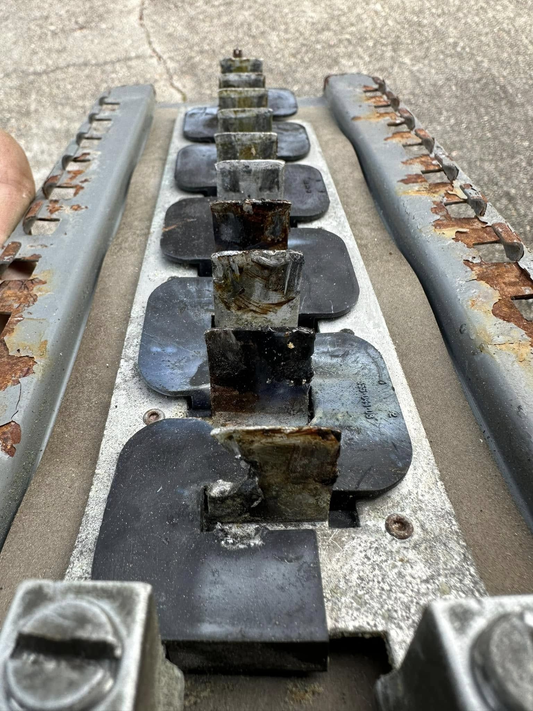

Khi có thứ gì đó tóe lửa, bốc khói hoặc chết máy lúc 2 giờ sáng, quý khách không cần điền form. Quý khách cần xe lăn bánh tới.
Gọi (228) 224-9150. Tôi sẽ nói thẳng đây có phải trường hợp khẩn cấp hay có thể chờ — và tôi không thu phí cho sự thành thật đó.
Thế nào là trường hợp khẩn cấp
- Mùi cháy khét từ ổ cắm, tủ điện hoặc thiết bị điện
- Ổ cắm hoặc công tắc tóe lửa
- Mất điện hoàn toàn (và không phải do công ty điện)
- Aptomat không bật lại được hoặc nhảy liên tục
- Nước gần tủ điện hoặc ổ cắm
Quy trình làm việc
Phản hồi nhanh
Tôi nghe máy hoặc gọi lại ngay — trường hợp khẩn cấp không bao giờ rơi vào hộp thư thoại.
An toàn ngay lập tức
Tôi sẽ hướng dẫn quý khách cách đảm bảo an toàn ngay lúc này, trước cả khi tôi lên đường.
Tìm ra, sửa cho đúng
Tôi tới nơi, truy ra nguyên nhân thật — không chỉ triệu chứng — và sửa cho đúng.
Báo giá trước, kể cả lúc nửa đêm
Báo giá bằng văn bản trước khi bắt đầu bất kỳ việc gì. Không bao giờ chặt chém giá lúc nửa đêm.
Câu hỏi thường gặp
Phí gọi thợ điện khẩn cấp được tính như thế nào?
Phí tới khảo sát & đánh giá là $75 — luôn báo trước khi chạy xe và trừ lại vào tiền công nếu quý khách làm. Phụ phí làm ngay trong ngày hoặc khẩn cấp luôn nói rõ từ đầu cùng báo giá văn bản.
Trường hợp nào cần gọi thợ điện khẩn cấp ngay?
Mùi khét nhựa quanh tủ điện hoặc ổ cắm, tiếng kêu rè rè lẹt xẹt trong tủ aptomat, tia lửa điện, vết cháy sém, mặt cầu dao nóng hoặc mất điện một nửa nhà sau bão. Tắt cầu dao nếu an toàn và gọi ngay (228) 224-9150.
Có nên bật lại nhiều lần khi cầu dao cứ nhảy không?
Không. Cầu dao nhảy lại ngay nghĩa là đang có chạm chập hoặc quá tải thật. Cố gạt lên nhiều lần sẽ làm nóng chảy tiếp điểm và dây âm tường.
Tôi có thể nhắn tin gửi hình chụp trước được không?
Được. Quý khách gọi (228) 224-9150 hoặc gửi hình tủ điện, ổ cắm cháy sém để tôi hướng dẫn ngắt mạch an toàn trong lúc đang tới.
Tóe lửa? Bốc khói? Tối đen?
Đừng chờ. Đừng tra Google. Gọi đi.